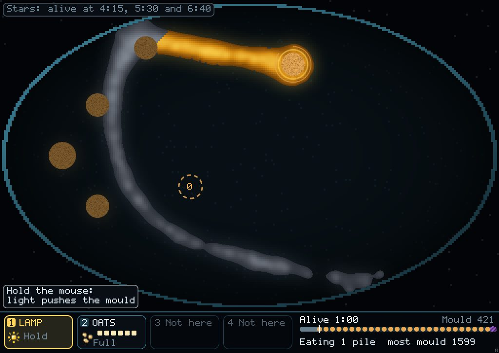
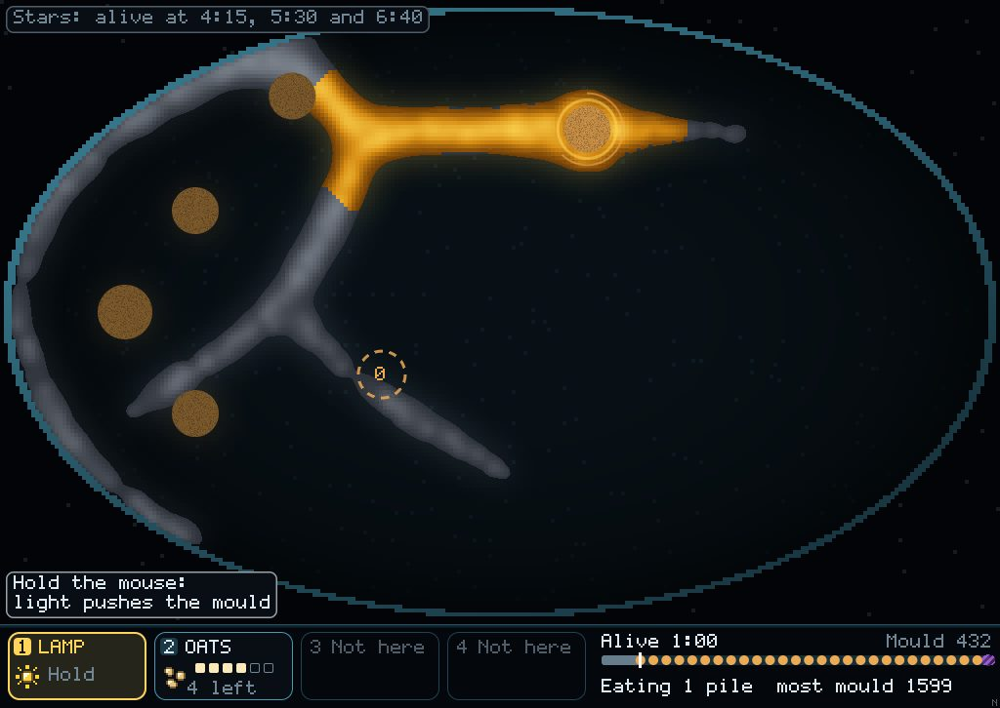
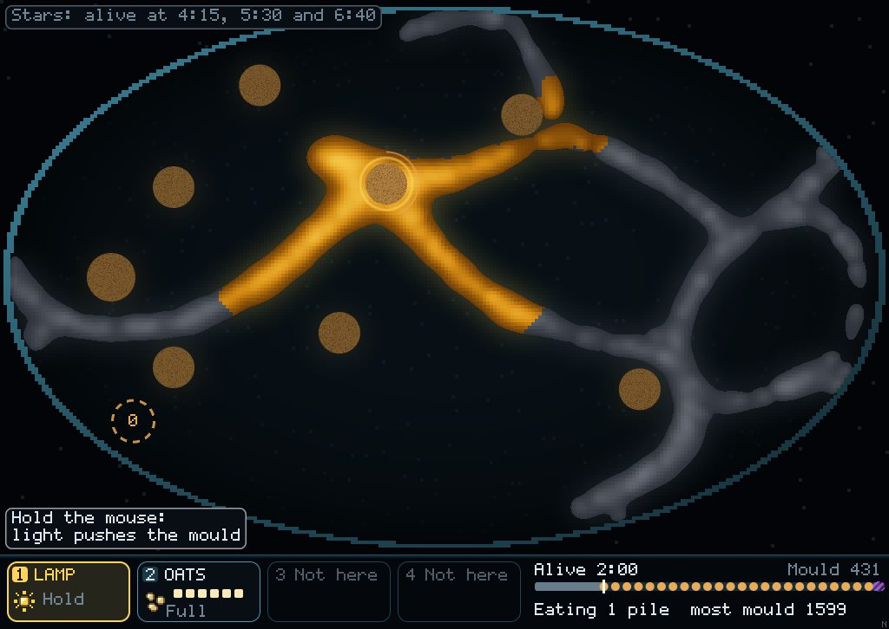
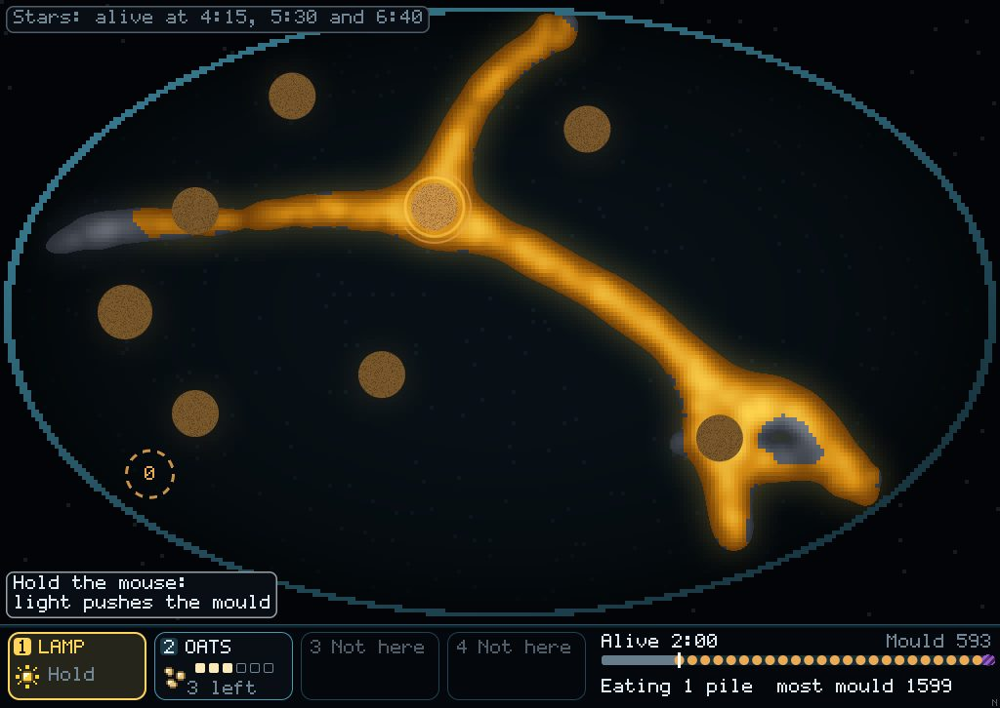
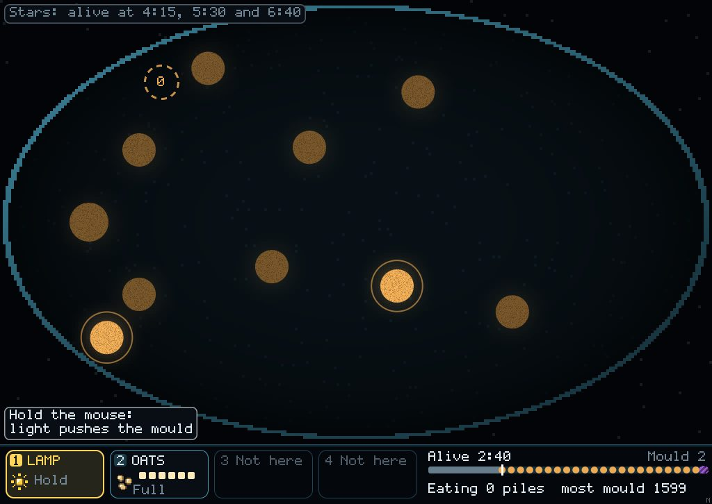
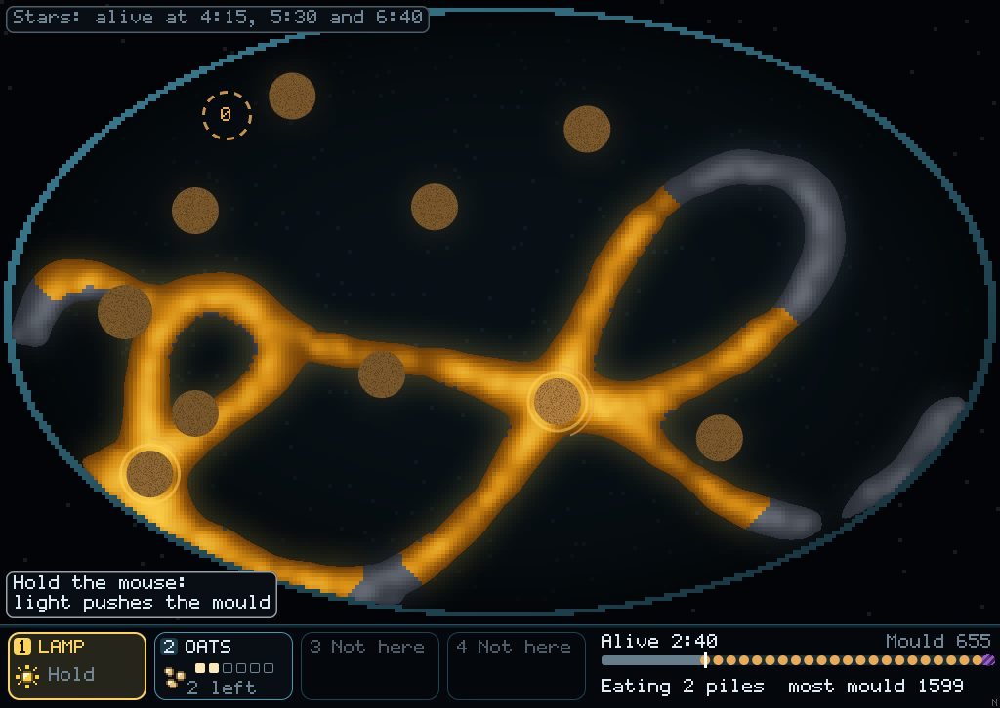
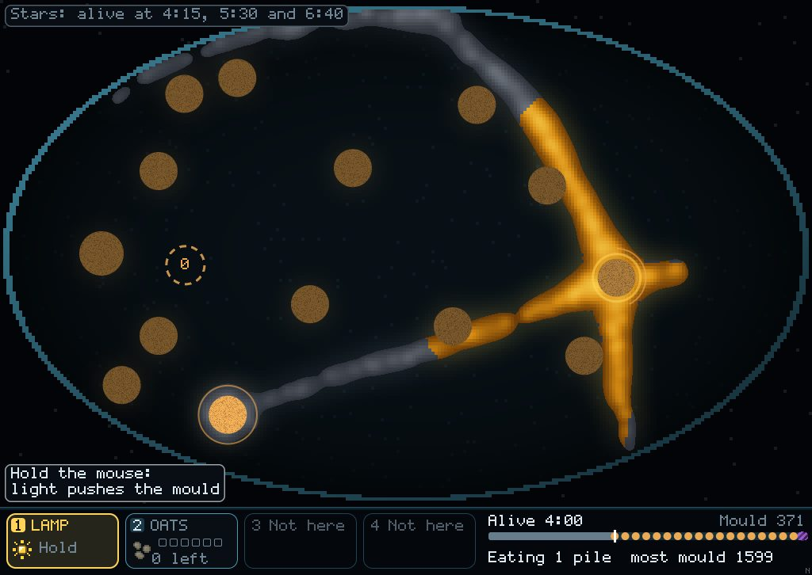
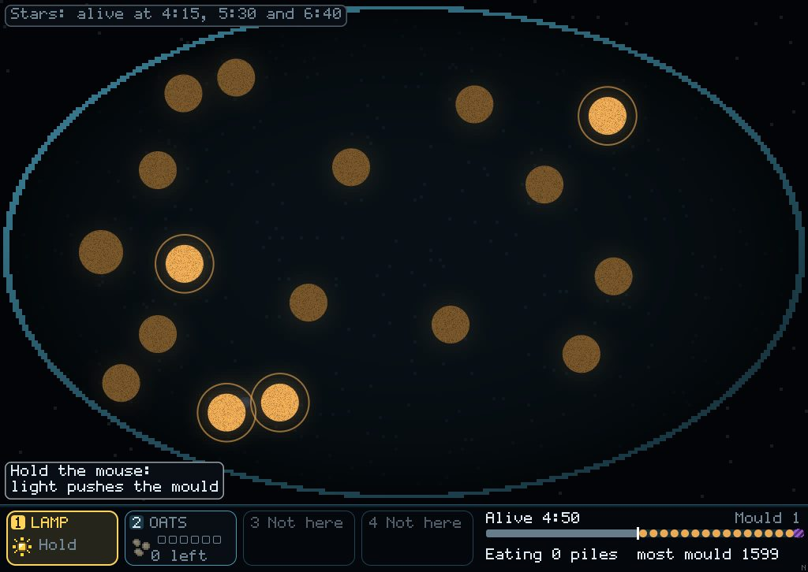
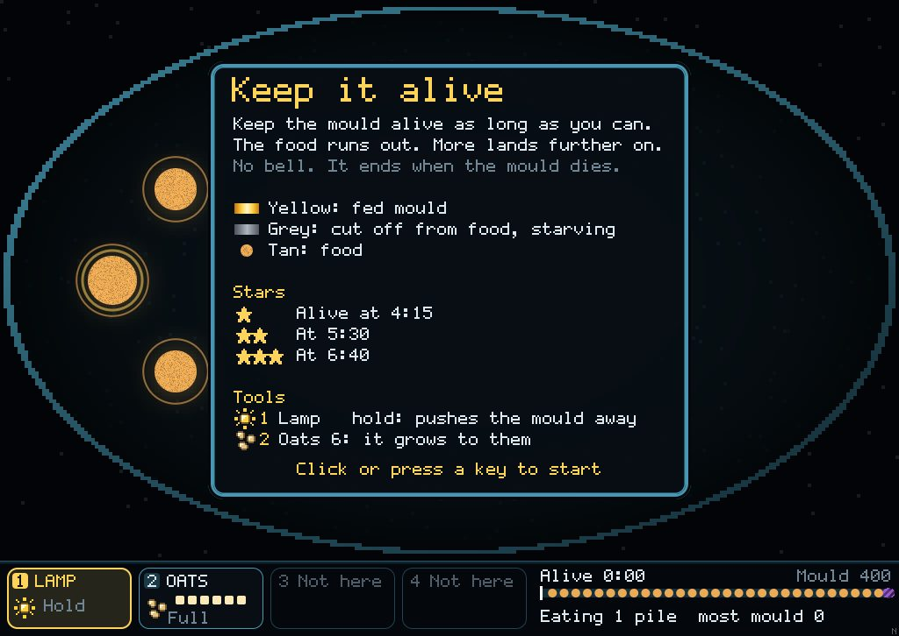
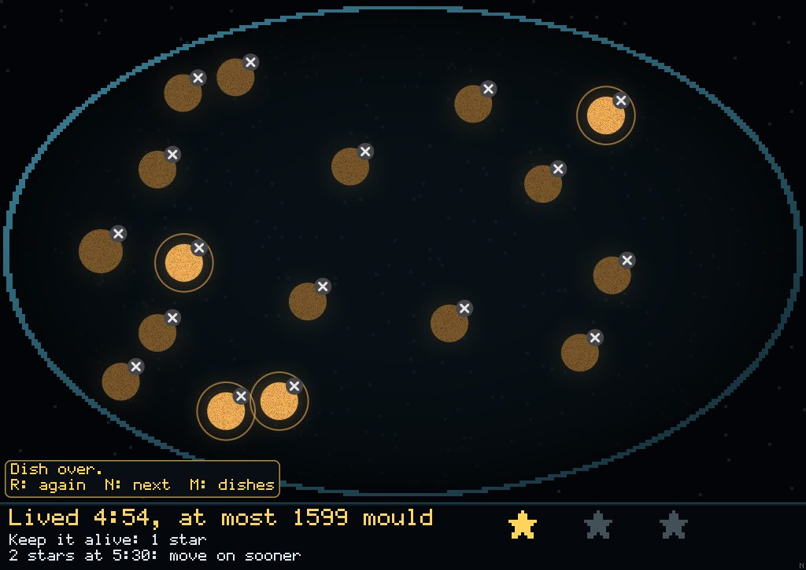

An endless dish where spending oats at the right time keeps the mould alive
Keep It Alive is Running Dry with no bell, at 22.5°. Small piles run out, and a new one lands every 20 s, a little further from the last each time. You get 6 oats and they don't come back. The dish ends when the mould dies, and the score is how long it lived.
Saving your oats beats doing nothing
Over 16 seeds, doing nothing lives 1:21–4:08 (median 2:27), and random play 1:23–3:22.
A scripted hand that saves its oats lives 3:18–5:40 (median 3:49). It beats doing nothing on 14 of 16 seeds (sign test p = 0.004) and random play on 15 of 16. It only lays oats once the food the mould is eating is nearly gone and the next pile is out of reach.
Timing is what matters. The same hand laying oats as soon as a pile appears did no better than doing nothing (1:59–3:29 on the first 8 seeds). For the first minute and a half, piles land on mould that is already there, so early oats are wasted.
Seed 2: doing nothing (left) and saving oats (right)

Do nothing, 1:00

Saving oats, 1:00 · no oats spent yet

Do nothing, 2:00

Saving oats, 2:00

Do nothing, 2:40 · 2 mould left; it died at 2:44

Saving oats, 2:40

Saving oats, 4:00 · oats all spent, still alive

Saving oats, 4:50 · died at 4:54
Seed 2. Doing nothing lived 2:44; saving oats lived 4:54. Most mould at once was 1,599 for both. Bright piles still have food, dull brown ones are eaten out, and the dashed ring is the next pile landing.
The card and the end

The briefing card

The end · "Lived 4:54, at most 1599 mould"
Every seed, how long it lived
Seed
1
2
3
4
5
6
7
8
9
10
11
12
13
14
15
16
Do nothing
2:32
2:44
3:06
4:08
2:22
1:21
2:10
2:26
2:01
2:16
2:27
2:39
2:21
3:22
2:48
1:40
Random
2:27
2:31
1:40
3:02
1:23
3:16
1:58
2:37
1:59
3:13
2:29
2:03
2:41
3:22
3:17
2:34
Old plan hand
2:29
2:39
2:44
3:06
3:03
2:53
2:43
3:43
2:00
2:40
1:18
2:00
1:39
4:07
3:52
2:19
Saving oats
3:20
4:54
4:22
3:49
4:10
4:21
5:40
3:48
3:42
3:49
3:18
3:42
4:18
3:19
4:54
3:18
Stars are set past doing nothing's longest run: alive at 4:15, 5:30 and 6:40. Doing nothing and random play get 0 stars on all 16 seeds. The scripted hand gets 1 star on 4 seeds; stars 2 and 3 are for a person to beat it.
Why the mould dies: it wanders onto a new pile but can't start eating it until fed tube grows within reach. Once the jumps grow past about 50 cells, it can't bridge them alone.
Not yet
The lamp has no job here yet. That's what water and sleep are for, next: a wet field you lay, and dry mould that sleeps until water wakes it.
Eaten piles stay on the dish as dull discs. They're real (spent food), but they pile up over five minutes.
Finer tubes (sensor reach about 6) are still to come. The looks are in their own thread.
Try it: cargo run --release --bin mould, open the dishes, then Keep It Alive (open from the start).